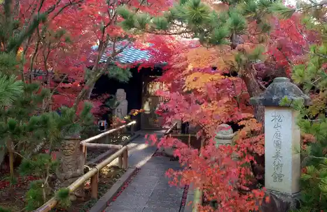
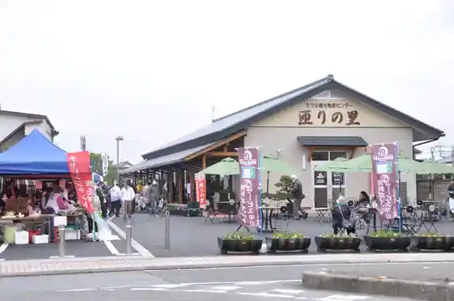
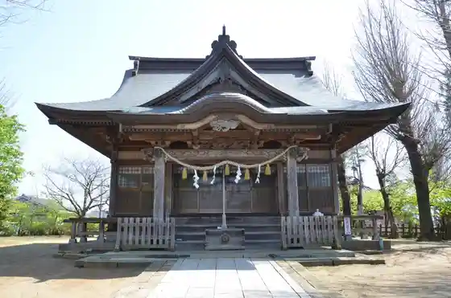
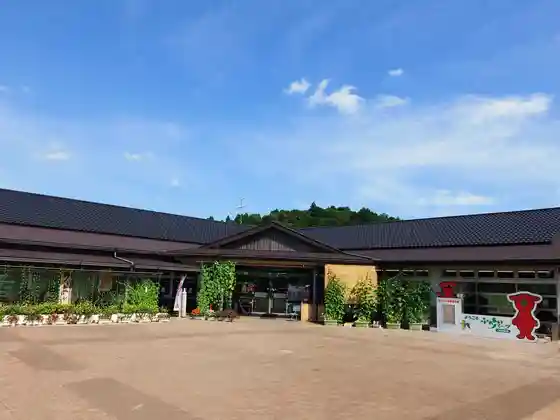

Iidaka Danrin Ato (Iidaka Tera)
Sosa, Chiba · 0479-73-0014 · Official / source link
Matsuyama Teien Art Museum
Sosa, Chiba · 0479-79-0091 · Official / source link

Sosa Kanko Bussan Center So Ri Village
Sosa, Chiba · 0479-85-5015 · Official / source link

Yaegaki Shrine
Sosa, Chiba · 0479-73-0014 · Official / source link

Fureai Park Yoka Market
Sosa, Chiba · 0479-70-5080 · Official / source link

Nosaka Fureai Park
Sosa, Chiba · 0479-73-0091 · Official / source link
Tsubaki no Kaisui Shrine
Sosa, Chiba · 0479-72-0055 · Official / source link
Yoka City Ba Toshogu
Sosa, Chiba · 0479-72-1099 · Official / source link
Tenjin Yama Park
Sosa, Chiba · 0479-73-0091 · Official / source link
NAGARAMI RESORT SOSA
Sosa, Chiba · Official / source link
Matsuyama Shrine
Sosa, Chiba · 0479-73-3339 · Official / source link
Ro O Shrine
Sosa, Chiba · 0479-73-0014 · Official / source link
Warai Hono Forest CAMP&BBQ
Sosa, Chiba · 080-5545-1902 · Official / source link
Aku Yama no Sudajii
Sosa, Chiba · 0479-73-0014 · Official / source link
Soga Kyodai no Haka
Sosa, Chiba · 0479-73-0014 · Official / source link
Nishi Ozasa Hachiman Shrine
Sosa, Chiba · 0479-72-4529 · Official / source link
Kisetsu no Hana (Tsutsuji) / En Jitsu Tera
Sosa, Chiba · Official / source link